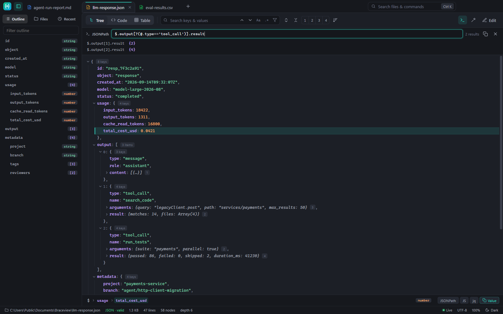
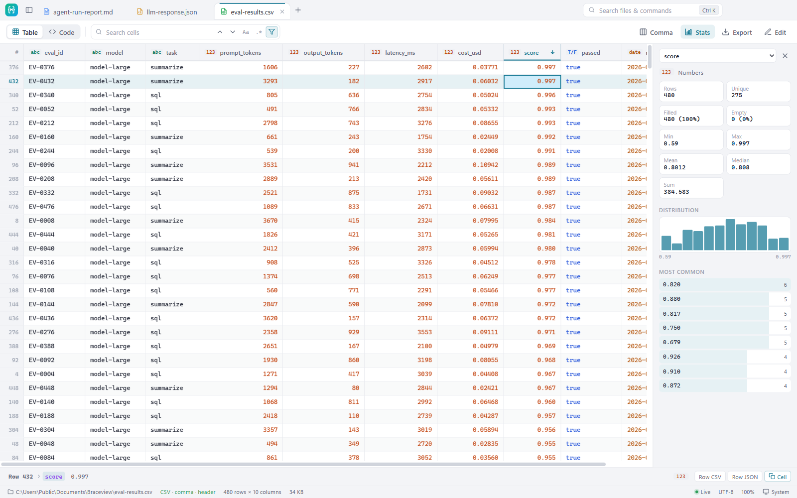
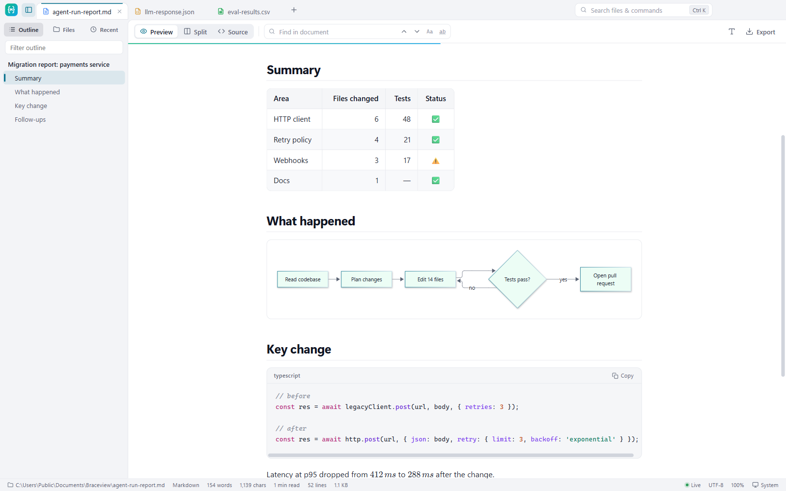
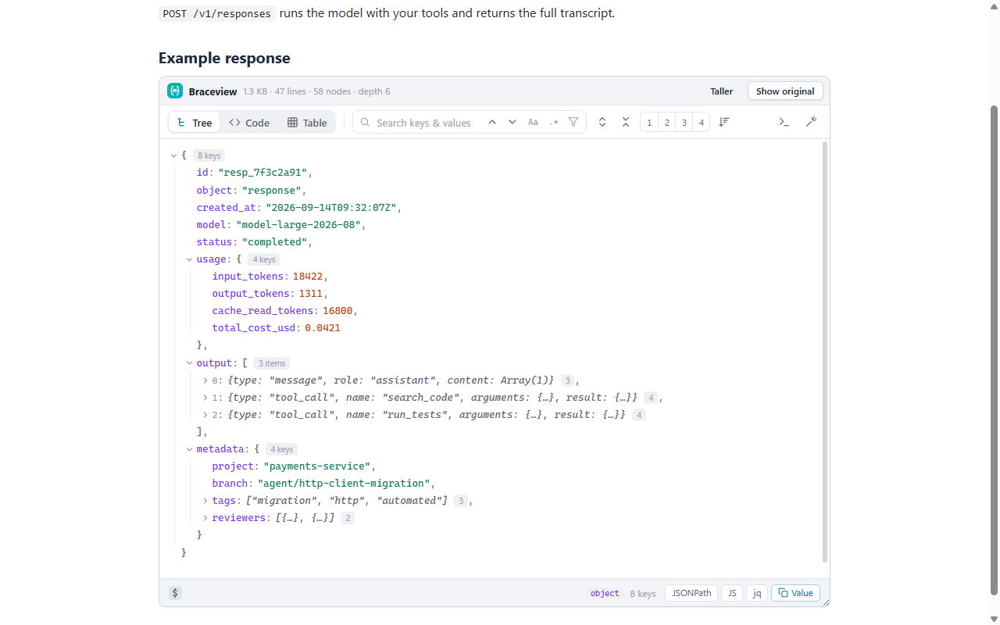

"why"
I just wanted toread the file.
Someone sends you response.json. Two lines. You double-click it, and an IDE wakes up: extensions, workspace index, an update prompt. All that to read two lines. Braceview is the small thing that only opens the file, then gets out of the way.
"json"
Find the value,not the bracket.
- Tree view that expands to any depth, with search that filters as you type
- JSONPath queries and one-click copy of a path as JSONPath, JS or jq
- Table view for arrays of objects, sortable and copyable as CSV
- Tolerates comments, trailing commas and JSON Lines

"csv"
A million rows,no waiting.
- Sort a million rows in 0.25 s, search and filter without changing the file
- Column statistics: empty values, unique counts, min, max, mean and a distribution chart
- Detects commas, semicolons, tabs, headers and European decimal commas
- Export the rows you see as JSON, Markdown or CSV

"markdown"
Reports that looklike reports.
- Diagrams, math, tables and GitHub-style alerts, rendered
- An outline that follows you as you read
- Split view to edit with a live preview
- Export to PDF or HTML to share

"chrome"
The same viewer,in your browser.
- API responses open as a searchable tree instead of a wall of text
- Raw GitHub files: .md and .csv render in the tab
- JSON in docs pages: hover a code block and click View as tree
- On ordinary web pages only a 4.7 KB detector runs. Turn it off per site from the toolbar

"speed"
This line isone second long.
watch what fits inside it. measured on a Ryzen 5 7530U laptop, not a workstation
- 95 msclear a filter on 1M rows
- 248 mssort 1M CSV rows
- 347 mscolumn stats on 1M rows
- 431 mssearch a 20 MB JSON
- 840 msapp launched
- 982 mssmall JSON on screen, from cold
method, machine and every number: BENCHMARKS.md
"uploads"
0
files are read on your machine. there is no server to send them to
"account"
null
no sign-up. settings stay on your device
"telemetry"
false
no analytics, no tracking, works offline
"get_it"
Free, everywhere.
version 1.2.1 · release notes · price: 0
Windows 10 and 11, automatic updates. Or: installerportable, no install
macOS 12 or later. Intel Macfirst-time opening
JSON, CSV and Markdown pages, right in the browser. install the zip instead
"faq"
Questions.
Windows says “Windows protected your PC”
The installer isn't code-signed yet, so SmartScreen doesn't recognise it. Click More info, then Run anyway. The Microsoft Store version doesn't show this warning.
macOS says the app “can't be opened” or “Apple could not verify it”
Braceview isn't notarized by Apple yet. To open it the first time:
- Drag Braceview to Applications and open it once. You'll see the warning. Click Done.
- Open System Settings → Privacy & Security, scroll down and click Open Anyway next to Braceview.
- Confirm with your password. After that it opens normally.
How do I open files with Braceview by double-clicking?
Windows: right-click a .json, .md or .csv file → Open with → Choose another app → Braceview → tick Always. Mac: right-click a file → Get Info → Open with → Braceview → Change All.
How do I install the extension without the Chrome Web Store?
Easiest is the Chrome Web Store listing. To load the zip by hand instead:
- Unzip
braceview-extension-*.zipto a folder you'll keep. - Open
chrome://extensions(oredge://extensions) and switch on Developer mode. - Click Load unpacked and choose the folder. For local files, open Details and enable Allow access to file URLs.
Why can't the extension show some CSV links?
Chrome always downloads files that a website sends as text/csv, before any extension can see them. CSV files served as plain text, like raw files on GitHub, open in Braceview.
Is it really free?
Yes. No trial, no account, no ads.
I found a bug or want a feature
Please open an issue on GitHub.